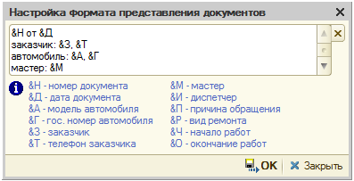

Обработка представляет собой рабочее место мастера-консультанта и предназначена для планирования времени выполнения работ по ресурсам: цехам и исполнителям.
Является основной формой АРМ. Форма состоит из следующих элементов:

Диаграмма может быть представлен в трех режимах: "На месяц", "На день" с разбивкой планирования по цехам и "На день" с разбивкой планирования по исполнителям.
В режиме "На месяц" в ячейках размещаются показатели загрузки в следующем формате:
1) по цехам: фактическая в часах/оптимальная в часах, фактическая в автомобилях/оптимальная в автомобилях;
2) по исполнителям: фактическая в часах/оптимальная в часах, фактическая в автомобилях/оптимальная в автомобилях.
Загрузка рассчитывается суммарно по всем цехам и исполнителям, по которым производится планирование.
Выбор какого-либо дня позволяет перейти к планированию в режиме "На день".
В режиме "На день" в ячейках диаграммы размещаются запланированные работы согласно настройке представления заявки. Цвета ячеек запланированной работы соотстветствуют цвету «состояния заказа-наряда», введенного на основании данной заявки на ремонт, если заказ-наряд не введен - по умолчанию работа отображается зеленым цветом. Рядом с основной колонкой в зависимости от настроек может размещаться колонка, изображаюшая фактические состояние выполнения работ по данным регистров подсистемы «Учет рабочего времени» (цвет ячейки подставляется из справочника «Виды отметок времени» и отражает факт выполнения работ).
 Нажатие на кнопку выбора или щелчок правой кнопкой мыши в ячейке (области ячеек) диаграммы в режиме "На день" вызывает контекстное меню, откуда доступны различные группы операций в зависимости от области выделенных ячеек:
Нажатие на кнопку выбора или щелчок правой кнопкой мыши в ячейке (области ячеек) диаграммы в режиме "На день" вызывает контекстное меню, откуда доступны различные группы операций в зависимости от области выделенных ячеек:
1) Группа добавления работ - отображается, если в области выделенных ячеек нет других работ и область соответствует конкретному ресурсу. Содержит кнопку добавления новой работы из справочника, кнопки с предопределенными работами (работы, указанные в должности исполнителя), кнопку вставки работ из буфера обмена, кнопку "Выбрать работы" для перепланирования выбранных работ на текущего исполнителя, кнопки текущих работ в соответствии со списком "Планирование" - позволяют перепланировать уже запланированные работы на другое время или назначить время для работ, которые еще не были запланированы.
 2) Группа операций с работами - отображается, если в области выделенных ячеек есть работы по текущей заявке на ремонт. Содержит кнопку "убрать из плана" для очистки времени начала и времени окончания текущей работы, кнопку удаления из документа, кнопку "вырезать" и "копировать" для работы с буфером обмена работ.
2) Группа операций с работами - отображается, если в области выделенных ячеек есть работы по текущей заявке на ремонт. Содержит кнопку "убрать из плана" для очистки времени начала и времени окончания текущей работы, кнопку удаления из документа, кнопку "вырезать" и "копировать" для работы с буфером обмена работ.
3) Группа перехода к документам - отображается, если в области выделенных ячеек есть работы по различным заявкам на ремонт. Содержит кнопки "Перейти к редактированию ЗР ..." для загрузки данной заявки на ремонт в качестве текущего документа в АРМ, "Перейти к форме ЗН ..." для перехода к Заказ-нарядам, введенным на основании Заявки на ремонт, "Открыть форму" для открытия формы текущего документа.
Расшифровка цветов:

Основные действия:
- Пакетная печать. Печать документа через форму пакетной печати.
- Записать. Запись и проведение документа.
- Закрыть. Закрыть форму.
Способ вызова
Открывается из обработки "Функциональная панель". Отдельно не используется.
Настройка параметров
Используется для настройки различных параметров отображения диаграммы. Cостоит из следующих настроек:
Интервал автоматического обновления. Интервал автоматического обновления в секундах (от 10 до 999 секунд).
Критерий оценки загруженности. Один из показателей, по значению которого будет раскрашиваться ячейка в режиме "На месяц".
Режим календаря по умолчанию. Вариант отображения диаграммы, который будет использоваться по умолчанию при переключении в режиме "На день".
Базовый график. График работы, по данным которого будет формироваться диаграммы в режиме "На день".
Использование графиков работы. Назначает, какой график будет использоваться при формировании диаграммы: график рабочих мест (каждого исполнителя/цеха в отдельности), базовый график или без учета графиков. В соответствии с выбранным графиком показываются рабочие/не рабочие интервалы времени, перерывы, выходные дни и т.д.
Отображать только работающих. Управляет видимостью рабочих мест в диаграмме в режиме "На день" при отображении с использованием графиков рабочих мест. Когда флажок выбран, отображаются только те рабочие места, для которых вид дня по графику задан как рабочий (рабочий, предпраздничный). Рабочие места с нерабочим видом дня по графику (выходной, праздник) отображаются, если имеются запланированные заявки на ремонт. Когда флажок не выбран, отображаются все рабочие места согласно графикам рабочих мест.
Отображать данные УРВ. Управляет видимостью колонки, в которой отображаются данные по фактическому состоянию выполнения работ по данным регистров подсистемы «Учет рабочего времени».
Отображать легенду. Управляет видимостью легенды, которая выводится в нижней части диаграммы в режиме "На день". В легенде отображается расшифровка служебных цветов и состояний заказ-наряда. Если включено отображение данных УРВ, добавляется колонка с расшифровкой видов отметок времени.
Интервал календаря. Временной интервал для одной ячейки в режиме "На день".
Продолжительность. Количество дней, отображаемых в режиме "На день".
Представление заявки. Определяет, как будет отображаться заявка на ремонт в режиме "На день". Настройка представляет из себя форматную строку, которая состоит из служебных и вспомогательных символов. Служебные символы автоматически заменяются соответствующими значениями, в качестве вспомогательных символов могут использоваться любые клавиатурные символы, разрешенные к вводу в строчные поля платформой "1С-Предприятие". Перечень зарезервированных служебных символов приведен в окне настройки представления заявки, которое вызывается по кнопке открытия в данном поле.

Например, форматная строка "&Д от &Н". Представление заявки в таком случае будет выглядеть как в следующем примере: "ЦОА0000001 от 01.01.2012". Вместо "&Д" подставляется дата документа, вместо "&Н" - номер документа.
Ширина колонки. Ширина основной колонки (рабочие места). Значение в диапазоне от 10 до 50.
Режим добавления работ в одиночную ячейку. Назначает, какой интервал займет добавленная работа: согласно выделенным ячейкам или на нужное количество ячеек согласно нормативу автоработы. Используется, например, при добавлении работы в одиночную ячейку, перетаскивании из табличной части "Планирование".
Действие при повторном добавлении работы. Показывает, какая операция будет выполняться при повторном добавлении работы, которая уже имеется в табличной части "Планирование": добавление копии работы на новый интервал времени (копирование) или изменение запланированного времени имеющейся работы (перепланирование).
Способ вызова
Открывается из основной формы обработки по кнопке "Настройка параметров". Отдельно не используется.
"Настройка полей поиска". Служит для указания перечня полей, по которым производится поиск документов. В форме настройки полей поиска обязательно должно быть выбрано хотя бы одно поле.
открытия формы дерева связей документа.
"Вырезать работу" . Работы, которые выделены на диаграмме, копируются в буфер обмена, затем удаляются из таблицы "Планирование" и диаграммы.
"Копировать работу в буфер". Работы, которые выделены на диаграмме, копируются в буфер обмена.
"Вставить работу из буфера". Открывается окно добавления работ из буфера обмена. Окно открывается только, если в буфер предварительно были помещены работы. Работы будут добавлены в ячейки диаграммы начиная с текущей активной ячейки.
смены ориентации диаграммы с вертикальной на горизонтальную и наоборот.
"Распределить по ширине". Изменяет ширину колонки: в ориентации по горизонтали - устанавливает продолжительность в 1 день и ширину колонки, чтобы один день помещался в экран по ширине, в ориентации по вертикали - устанавливает ширину колонки рабочего места, чтобы все рабочие места помещались в экран по ширине. При этом ширина колонки не может быть меньше заданного минимального предела.
"Показатели загрузки ресурсов". Включает видимость диаграммы показателей загрузки ресурсов в режиме "На день". На диаграмме выводятся итоговые показатели загрузки и итоговые потенциалы по всем рабочим местам на каждый день недели.
 открытия формы "Настройка параметров".
открытия формы "Настройка параметров".
открытия формы настройки отборов. На закладках формы настраивается отбор по рабочим местам. Отбор для исполнителей и цехов выполняется на раздельных закладах.
снятия отборов по рабочим местам.
обновления отображения.